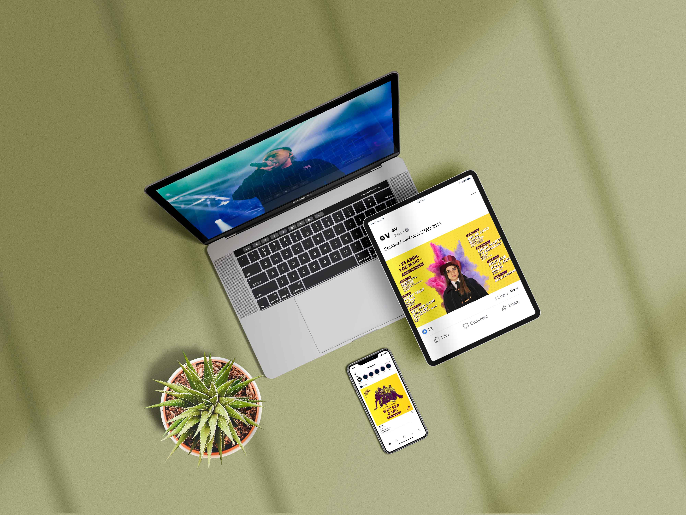

Criação, produção e cobertura do evento.
A criação do conceito para a Semana Académica da UTAD 2019 "Cumpre a tradição" passou por várias fazes criativas, que culminou numa imagem final em tons de amarelo e roxo, o intuito foi promover a vida estudantil na academia e na cidade com o famoso termo.

O cartaz apresentado representa a fase final do cartaz que foi produzido e divulgado pelo país inteiro.
#2. Promoção e Divulgação do Evento
Para promover e divulgar o evento durante os dias antecedentes, foram elaboradas vários tipo de publicações online.

Exemplo de publicação
Para promover e divulgar o evento no computo geral, foram elaboradas vários tipos de publicações, já que a comunicação foi predominantemente online, apenas com o cartaz a assumir um suporte físico.
Para isto, elaboramos várias publicações originais adaptadas para Facebook e Instagram, dois dos meios mais utilizados pelos estudantes.
Não podendo faltar a boa cobertura do evento, todos os artistas foram fotgrafados assim como o público e realizado um after-movie de todo o evento.
As fotografias aqui apresentadas assumem a minha autoria e o after-movie a minha co-autoria